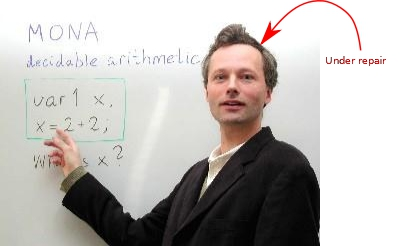
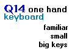
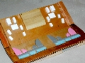
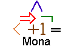
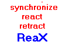
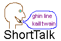
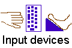
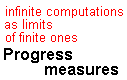

The keyboard is now available
on the BlackBerry 7100.
Concept and software
are hosted at SourceForge.
Now
available
at SourceForge as open speech
software offered by Carnegie Mellon University.
The keyboard is now available
on the BlackBerry 7100.
Concept and software
are hosted at SourceForge.
Now
available
at SourceForge as open speech
software offered by Carnegie Mellon University.
Nils KlarlundPhD, Cornell University, 1990 |
 |
| XML research survey. (draft version). XML: Model, Schemas, Types, Logics and Queries (with Thomas Schwentick and Dan Suciu), revised version to appear in Logics of emerging applications of databases, Eds. J. Chomicki, G. Saake, and R. van der Meyden, Springer Verlag, 2003. Related invited talk at NICTA Inaugural Formal Methods Programme Workshop. | |
|  |
Language
modeling for typing on Q14 and other reduced
keyboards.
We show that the word error rate for
typing on a keyboard where adjacent keys have been
clustered in pairs according to the QWERTY layout may be
made almost negligible thanks to large language models
used in speech recognition. The keyboard is now available
on the BlackBerry 7100.
|
|  |
ShortStep
foot keyboard design.
A radically different
approach to managing computer-related discomfort.
Almost every keyboard shortcut is directly accessible
through foot keys. The ShortStep keyboard allows
you to lean back in your chair while working on
repetitive tasks with little or no use of your arms.
Concept and software
are hosted at SourceForge.
|
|  | Making decades-old theory linking automata and logic work in practice. The concept of BDD for encoding Boolean functions plays an important role in verification. Mona is a tool based on a more general theory related to decidable fragments of arithmetic. Applications of Mona include hardware verification, protocol configuration, pointer analysis, parsing, theorem proving, etc. |
|  | Towards a foundation for multimodal, multimedia content definition. Multimedia content—where audio, video, and graphics—are synchronized in sophisticated ways is already common on the Web. Multimodal interfaces extend usability by integrating speech recognition, gestures, etc. A foundation for such work must be based on a programming language that includes concurrency, timing constraints, and built-in undo support. The survey talk (html) [Powerpoint] explains my interests in user interface technology and how they lead to fundamental questions about events and synchronicity. |
|  |
Editing
talk so enticingly efficient it is a pleasure to
learn.
Speech recognition as a way of getting your thoughts
across the human-machine interface remains an elusive
technology. ShortTalk solves the problem in the domain
of text composition though a constructed editing
language. Slides
from talk:
ShortTalk and ShortStep—with mid-20th century insights
into universal and perfect languages. ShortTalk paper presented
at ICME '2003 (also,
ICASSP '2003). Now
available
at SourceForge as open speech
software offered by Carnegie Mellon University.
|
|  | Usage-driven design. Since overuse injury is a long-term result, most "ergonomic" design remains unproven—despite claims of positive results in trials. I have experimented with input device concepts for over 10 years. It is my hope that the couple of surviving ideas may help other people suffering from computer-induced pain. |
| The essentials of XML Clogged by contradictory and complex specifications, XML at heart is a welcome practical manifestation of tested ideas in computer science. With the DSD work, we try to influence the XML community through proposals rooted in programming language and automata theory. DSD 2.0 by Anders Møller can be found at the DSD Web site. | |
|  | Understanding infinite computations in terms of finite ones. In my Ph.D. thesis, I argued that infinite computations that involve liveness are best understood as limits of finite ones. The finite approximations are characterized by a progress value. For various levels of topological complexity, it is possible to formulate such measures of progress. Applications include reasoning about fairness and analyses of automata on infinite objects. |
For a full list of papers, see my CV (PDF).
The papers below are just a sample. Please see papers at the Mona web site for a full list.
Relativizations for
the logic-automaton connection. (Submitted.) The
mathematical framework Mona uses for handling first-order
variables and relativizations. This paper introduces
ternary and sexpartite valuations to capture relativized
formulas under an automata-theoretic view.
XML:
Model, Schemas, Types, Logics and Queries (Draft
version, with Thomas Schwentick and Dan Suciu, final
version to appear in Logics of emerging applications
of databases, Eds. J. Chomicki, G. Saake, and R. van
der Meyden, Springer Verlag, 2003.) We introduce XML,
provide a mathematical model, explain DOM, XPath and XSLT,
discuss schema and tree languages, work out the relevance
of tree automata and monadic-second-order logic to XML,
present decidability results for typing of XML, and
survey related research.
Word
n-grams for cluster keyboards (with Michael Riley,
EACL Workshop on Text Entry, 2003) Experimental studies of
how large language models help in correctly identifying
words entered on keyboards where letters are clustered (such
as on the telephone keypad). A reduced version of the
QWERTY layout appears especially promising.
Editing by
Voice and the Role of Sequential Symbol Systems for Improved
Human-to-Computer Information Rates. (ICASSP 2003.)
Arguments based on
cognitive theory, analyses of examples, and empirical
measurements for the potential of constructed jargons as a
solution to inefficacy of conventional spoken command and control.
My computer workspace is an unusual one. It is designed with the goal of virtually eliminating the usual physical strain on fingers, hands, and arms. Therefore, the use of these body parts must be drastically reduced—something that no amount of tinkering with keyboard or mouse design can achieve. The other goal is that the reassigned workspace be more efficient the conventional one; otherwise, there is no incentive to start working in different ways. These goals are usually regarded as irreconcilable. Attempting to solve the problem, I have been motivated by a typing injury (for that story see CTD-RSI).
After ten years of trial and error, I believe that I have found a promising approach. The solution is not commercially available. And, I don't know to which extent my ideas apply in general for the many people who are unable to use the keyboard and mouse in the intensive way necessitated by modern jobs.
My low-impact workspace concept integrates three user interface ideas:
The physical expression of this concept can be seen in this picture:
The video demos demonstrate how composing a letter is a breeze with speech recognition and how repetitive tasks are accomplished easily by foot work.
With the techniques illustrated in the videos, it is possible to work while leaning backwards in a relaxed manner, since hand work and finger work has been reduced to just occasionally pushing the mouse around. Therefore, the workplace puts less stress on neck and back as well.
Nils Klarlund is the founder of Clairgrove LLC. Presently a research scientist at Google, Nils Klarlund has worked at IBM TJ Watson Research Center, the University of Aarhus, AT&T Labs--Research, and Lucent Bell Labs. His interests span user interface design, reactive programming languages, algorithms for symbolic analysis, and program testing and verification. He received a M.Sc. from the University of Aarhus and a Ph.D in Computer Science from Cornell University.
A CV is available in PDF: here.
|
By Nils Klarlund.
Copyright ©Nils Klarlund, 2003.
|
XSLT &

|
{kind=link}